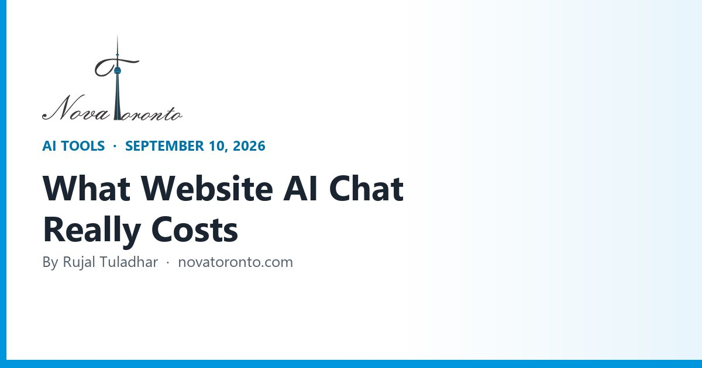

AI Chat Agents for Your Website: What They Cost in 2026
Published September 10, 2026 • By Rujal Tuladhar

You ask a chat vendor what their AI costs and you get a number that means nothing: "from $29 a month." Then you look closer and the seat fee is the small part. The real bill is a per-answer charge that only shows up once the thing is live and your customers start using it.
That is the change worth understanding before you sign anything this year. The main platforms have quietly moved from charging for people to charging for answers, and the per-answer rates differ by more than 10x for what looks like the same job. Below are the list prices I pulled from each vendor's own pricing page today, what their pricing units actually mean, and a worked example for a shop taking 300 website chats a month.
$0.99 per answer at the top end
Intercom's Fin charges per outcome, with a 50-outcome monthly minimum on outside helpdesks
$0.50 or less elsewhere
HubSpot bills 50 credits per resolved conversation; Freshworks charges $49 per 100 sessions
Vendors claim 67% to 84%
Fin says 76% average, Ada claims 84%, Tidio's Lyro says 67% — none of them audited
28.2% of AI-using firms run chatbots
Statistics Canada, Q2 2026 — virtual agents are the third most common business use of AI
Say it is a bot
Canada's privacy regulator expects people to know they are talking to a generative AI tool
AI Chat Agents for Your Website: What They Cost in 2026 at a glance — the short version.
The bill moved from seats to answers
Two years ago you bought chat software by the seat and the bot was a free extra. In 2026 the bot is the product and it is metered.
Intercom is the clearest example. Its pricing page lists Essential at $29 per seat per month, Advanced at $85 and Expert at $132 — and then charges separately "From $0.99 per Fin outcome." The Fin pricing page confirms the $0.99 and adds the fine print: no setup, integration or platform fees, but a 50-outcome monthly minimum if you run Fin on an outside helpdesk, plus $29 per helpdesk seat per month if you use it inside Intercom.
HubSpot meters the same thing in a different currency. Its Service Hub pricing puts Starter at $7 per seat per month paid annually ($20 monthly) and Professional at $90 annually ($100 monthly), with a free tier for up to two users. The Customer Agent costs "50 credits per conversation resolved," and extra credits run $0.010 each — about $0.50 an answer.
Freshworks is cheaper still and bundles a real allowance: Freshdesk is $19 per agent per month on Growth, $55 on Pro and $89 on Enterprise billed annually, and the Freddy AI Agent includes the first 500 sessions, then charges $49 per 100 sessions. Zendesk sits between them: Suite Team is $55 per agent per month paid yearly and Suite Professional is $115, with AI agents included and billed "based on the successful outcomes they deliver" — it does not publish the per-resolution rate or the included allowance, which is itself a useful signal about who that product is for.
What counts as a "resolution" is the whole negotiation
Every vendor meters something slightly different, and the definition moves your bill more than the headline rate does.
- Intercom bills an outcome, charged once per conversation no matter how many questions Fin answers inside it — it counts when the customer confirms the issue is resolved, does not come back after Fin replies, or when Fin completes a workflow including a handoff.
- Tidio defines a Lyro conversation as "a customer interaction initiated through any channel integrated with Tidio that has at least one reply from our AI agent," and notes that a dozen replies, or the customer leaving and returning later, still count as one.
- Freshworks uses a session — for its email agent, a 72-hour window from the customer's first email, with every AI reply inside that window counting once.
- Crisp skips per-conversation billing entirely and sells you AI credits with the plan.
The two questions to ask on any sales call: does an unresolved conversation that gets handed to a human still bill, and does a returning customer start a new billable unit? Handoff-heavy businesses — trades, clinics, anything where the bot's real job is booking a human — get very different bills under different answers.
Under $100 a month: Tidio, Crisp, Chatbase
If you are a single location with a website and no helpdesk, this tier is where you should start.
Crisp is the most predictable, because it is flat and per workspace rather than per seat. Its pricing page lists Mini at $45 per month per workspace with four seats and $5 of included AI credits, which it estimates at around 90 automated conversations; Essentials at $95 with ten seats and $25 of credits, around 450 conversations; and Plus at $295 with $75 of credits, around 1,350 conversations. Extra agents on Mini are $10.
Tidio is the easiest to try, because there is a genuinely free start: every account gets 50 Lyro conversations free for the lifetime of the account. After that, Starter is $24.17 a month for 100 billable conversations, Growth starts at $49.17, and the Lyro AI add-on is a separate ladder starting at $32.50 a month for 50 AI conversations. Tidio claims Lyro "boosts your resolution rate to 67% on average."
Chatbase is the option if you mostly want an answer bot trained on your own documents rather than a full inbox. Free gets 50 message credits a month; Hobby is $40 for 700; Standard is $150 for 4,000; Pro is $500 for 15,000. Note the unit is messages, not conversations — a six-message chat burns six credits — and removing Chatbase branding is a $99 a month add-on, which is steep if your whole plan is $40.
Who should skip this tier: if you already run a helpdesk your team lives in, bolting a second chat tool onto the website splits your customer history across two systems for no gain.
The same 210 answers, four very different bills
Take a realistic case: a service business getting 300 website chats a month, where the AI handles 70% of them without a human — 210 answers. Using the list prices above, and one agent seat:
- Freshdesk Growth: $19 for the seat, and 210 sessions sit inside the 500 included. About $19 a month.
- Crisp Essentials: $95 flat, and the $25 of AI credits is estimated at around 450 conversations, so 210 fits. $95 a month.
- HubSpot Service Hub Starter: $7 for the seat plus 210 × 50 credits = 10,500 credits at $0.010. About $112 a month.
- Intercom with Fin: 210 × $0.99 = $207.90, plus $29 for the Intercom seat. About $237 a month.
That is a 12x spread for the same volume of answered questions. Intercom is not overcharging — Fin's own page claims "industry leading resolution rates, averaging 76% across 12,000+ customers, with many seeing over 85%," it handles tickets, email, live chat, WhatsApp and SMS, and it runs on Salesforce, HubSpot or Freshdesk if you already have one. You are paying for a higher hit rate and deeper actions. But if your bot's job is answering "are you open Sunday" and "do you service Mississauga," you are buying a lot of capability you will not use.
Two cautions on this math. These are list prices in dollars on each vendor's page — check what your invoice is actually denominated in before you build a Canadian budget around them. And the 70% assumption is mine, not a vendor promise; run the same table at 40% and at 85% before you commit.
The quote-only tier, and when it is worth a call
Some of the strongest products in this category will not show you a price. Ada — which describes itself as "Proudly Canadian · globally trusted" — publishes an 84% automated resolution figure on its homepage and no pricing at all; its pricing page is a booking form for a free consultation. Voiceflow, which is the tool a lot of agencies use to build custom agents, likewise shows usage-based billing for agencies and a "Request pricing" button rather than tiers.
That is not a knock on either product. It tells you who they are built for: contact centres with enough ticket volume that a two-point lift in resolution rate pays for a procurement process. If you are running a clinic, a law office or a trades business, a quote-only vendor will spend your time and quote a number the self-serve tier makes irrelevant.
The honest rule: if you cannot articulate your monthly conversation volume from your own analytics, you are not ready for a quote-only vendor. Get three months of real chat data from a $95 tool first — that data is what makes any later negotiation winnable.
What you have to tell customers in Canada
Adoption is well past the experiment stage. Statistics Canada's analysis of AI use by businesses, based on a survey run April 1 to May 6, 2026, found 19.2% of businesses used AI to produce goods or deliver services in the previous 12 months, and 19.9% of businesses with just one to four employees did. Among AI-using businesses, virtual agents and chatbots were the third most common application at 28.2%, behind data analytics at 36.6% and text analytics at 34.5%.
Disclosure is the part most owners skip. The Office of the Privacy Commissioner's principles for generative AI, published December 7, 2023, put it under openness: organisations using these tools should ensure "individuals interacting with the tool are aware that they are interacting with a generative AI tool and that they are informed about both privacy risks and any mitigations available," and that outputs with a significant impact are "meaningfully identified as being created by a generative AI tool."
In practice that is a label on the chat bubble and one line in your privacy policy — not a project. Two more things worth doing the same afternoon: decide what the bot is never allowed to answer (pricing quotes, medical or legal advice, anything about an existing dispute), and make the handoff to a human obvious in the widget rather than buried behind three failed attempts.
The bottom line
The short version: if you take modest chat volume, Freshdesk's included 500 sessions or Crisp's flat $95 will cover you for less than one hour of staff time a month. If chat is genuinely how your customers buy, Intercom's Fin at $0.99 an outcome is defensible — but only after you have measured what share of conversations it will actually close. Either way, the tool is the easy part; the value comes from what happens after the answer, when a booking, a quote or a CRM record has to appear without anyone retyping it. That plumbing — chat to booking system to follow-up — is what we build for GTA businesses at Nova Toronto, and it is usually a short conversation to tell whether it is worth automating at all.
Want this working in your business?
Book a free 30-minute call and we'll map out which of these would actually save you time and win you customers.
Book a Free ConsultationSources: Intercom — Pricing (seats and Fin outcomes) • Fin.ai — Pricing, $0.99 per outcome and minimums • Fin.ai — Product page, resolution rate claims • Tidio — Pricing and Lyro AI add-on • Tidio — Lyro AI Agent, resolution rate and conversation definition • Crisp — Pricing, plans and included AI credits • Chatbase — Pricing and message credits • Zendesk — Pricing, Suite plans and automated resolutions • Freshworks — Freshdesk pricing and Freddy AI Agent sessions • HubSpot — Service Hub pricing and Customer Agent credits • Ada — Homepage, automated resolution claim • Ada — Pricing (consultation only) • Voiceflow — Pricing • Statistics Canada — Analysis on AI use by businesses in Canada, Q2 2026 • Office of the Privacy Commissioner of Canada — Principles for responsible generative AI